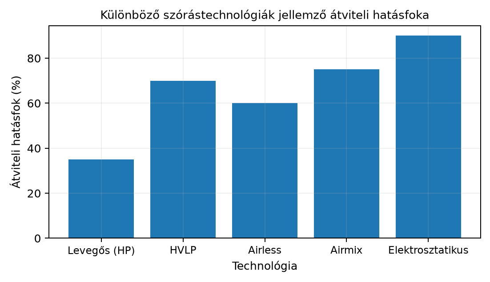

Motiváció: Az asztalos a műhelyben gyakran találkozik azzal a helyzettel, hogy egy elkészített bútort vagy belsőépítészeti elemet felületkezelni kell. A felületkezelő anyag felhordása nem mindegy: a jó felhordási mód egyenletes, folyamatos, anyagtakarékos és egészséges körülményeket biztosító, míg a rossz választás vagy beállítás narancsbőrös, csepegős, porszemcsés felületet, sok anyagpazarlást és egészségkárosodást okozhat. Ebben az alfejezetben a felületkezelő anyagok felhordásának módjait, kézi és gépi eszközeit, a szórástechnológiákat és a szórási gyakorlatot tanuljuk meg.
Szemléletes kép: Egy bútorlap lakkozásakor a szórópisztollyal dolgozó asztalos a lapot függőlegesen rögzíti, és oldalirányú, egyenletes sávokban, meghatározott átfedéssel vezeti a pisztolyt. A permetkúp széles legyezőt alkot, amelynek közepén nagyobb a folyadékmennyiség, szélein kevesebb. A jó minta szabályos, egységes legyező, nem csepeg, és az átfedő sávok egyenletes réteget adnak. Az alábbi oszlopdiagram a különböző szórástechnológiák hozzávetőleges anyagátviteli hatásfokát mutatja – vagyis azt, hogy a kiszórt anyag mekkora hányada kerül ténylegesen a munkadarabra.

A diagram jól mutatja, hogy a levegős nagynyomású (HP) szórás hatásfoka alacsony, míg az elektrosztatikus rendszeré kiemelkedő, de az utóbbi drágább és speciális anyagot igényel.
Definíció. A felhordás a felületkezelő anyag (pác, lakk, lazúr, olaj) egyenletes eloszlatása a munkadarab felületén meghatározott rétegvastagságban. A felhordás lehet kézi (ecset, henger, tampon) vagy gépi (mártás, hengerlés, öntés, szórás).
Definíció. A szórás olyan felhordási mód, amelynél a felületkezelő anyagot sűrített levegő vagy nyomás segítségével apró cseppekre porlasztjuk, és a cseppeket irányítottan a munkadarab felületére juttatjuk. A szóróberendezés fő részei: anyagtartály, szivattyú vagy nyomásközeg, tömlő, szórópisztoly, fúvóka.
Definíció. A viszkozitás a folyadék belső súrlódásának mértéke; gyakorlatilag azt fejezi ki, hogy a folyadék milyen „sűrűn” folyik. A szórható viszkozitás biztosítása hígítással történik. A faipari gyakorlatban a viszkozitást kifolyópohárral mérjük: a pohárba töltött anyag kifolyási idejét másodpercben adjuk meg (pl. „20 s, 4 mm-es pohár”). A gyártói adatlapon megadott értékhez (például 18–22 s) hígítunk.
Definíció. A szórásminta a szórópisztolyból kilépő permet keresztmetszeti alakja, amely lehet kerek vagy lapos (legyező). A mintát a fúvóka és a levegősapka állítja be, és próbalapon ellenőrizzük: a lapos legyező hosszúkás, egyenletesen kitöltött, szélei nem csipkézettek.
Szabály. A szórási távolság a fúvóka és a munkadarab közötti távolság. Tipikus értéke kézi szórásnál 150–250 mm (ellenőrizendő: a gyártó ajánlása). Túl közelről szórva csepegés, folyás keletkezik; túl távolról száraz, porszáraz permet, rossz terülés, alacsony hatásfok. A pisztolyt mindig merőlegesen, a felülettől azonos távolságban vezessük.
Definíció. Az átviteli hatásfok a ténylegesen a munkadarabra kerülő anyagmennyiség aránya a teljes kiszórt anyagmennyiséghez képest, százalékban kifejezve. A diagramon látható értékek tájékoztató jellegűek, mert függenek a munkadarab méretétől, alakjától és a dolgozó technikájától.
A kézi felhordás egyszerű, kis beruházást igényel, de lassú, és az egyenletesség nagyon függ a gyakorlattól. Főleg kis felületek, javítások, pácok, olajok és lazúrok felhordására használjuk, ahol a vékony réteg és a jó bedörzsölés fontos.
Ecset. Lapos vagy kerek ecsettel dolgozunk. A felületkezelő anyagot vékony, egyenletes rétegben, a szálirányt követve hordjuk fel. Ügyeljünk arra, hogy ne hordjunk fel túl vastagon, mert az ecsetnyomok megmaradnak. Pácolásnál az ecsetet a szálirányban, határozott mozdulatokkal vezessük, és a felesleget tiszta ronggyal töröljük le.
Henger. Nagyobb sík felületek (asztallap, bútorlap) alapozására, lazúrozására alkalmas. A rövid szőrű, habszivacs vagy plüss henger egyenletes réteget visz fel. A hengert egyenletesen telítjük, majd a lap szélétől indulva, párhuzamos sávokban, átfedéssel dolgozunk. A hengerrel felvitt réteg vastagabb lehet, ezért gyorsan kell dolgozni, hogy a szélek ne száradjanak be.
Tampon. Politúrozáshoz, olajozáshoz, viaszoláshoz használt, textilbe csavart vatta- vagy szivacsgombolyag. A tampont körkörös vagy nyolcas mozdulatokkal, vékony rétegekben dolgozzuk a felületbe. A tamponozás különösen a sellakpolitúr és az olajfelületek kialakításánál fontos; a rétegek között száradási időt hagyunk (ellenőrizendő: a gyártó előírása).
A gépi felhordás sorozatgyártásban, nagyobb darabszámnál vagy nagyon egyenletes rétegigénynél előnyös. A leggyakoribb gépi eljárások:
Mártás (mártó eljárás). A munkadarabot meghatározott sebességgel leengedjük a felületkezelő anyaggal töltött kádba, majd kiemeljük, és a felesleget lecsepegtetjük. A rétegvastagság függ az anyag viszkozitásától, a kiemelési sebességtől és a csepegési időtől. A mártás jól használható lécszerű, kis alkatrészek, fogantyúk, díszlécek alapozására vagy lakkozására. Hátránya, hogy a kádban az oldószer párolog, ezért a viszkozitást folyamatosan ellenőrizni kell (ellenőrizendő: a berendezés gyártójának adatai).
Hengeres felhordás (hengerlakkozó gép). A gép egy vagy több adagolóhengerrel viszi fel a felületkezelő anyagot a vízszintesen áthaladó lapra. A lapot szállítóhenger vagy szalag mozgatja, a felhordóhenger egyenletes réteget húz a felületre. A rétegvastagság a hengerhézag, a viszkozitás és az előtolási sebesség együttes hatása. Ez az eljárás kiváló sík lapok, furnérozott bútorlapok alapozására és fedőlakkozására; nagyon termelékeny és anyagtakarékos, de inflexibilis vastagság- vagy mintázatváltásnál.
Öntés (függönyöntő gép). A függönyöntő gépben a felületkezelő anyagot egy vékony résen keresztül folyamatos „függönyként” engedik lefelé, és a vízszintesen áthaladó munkadarabot ez a folyadékfüggöny fedi be. Az anyagfelesleget visszavezetik. Az eljárás nagyon egyenletes, nagy teljesítményű, és anyagtakarékos, mert a visszavezetett anyag újra felhasználható. Különösen alkalmas sík lapok, ajtólapok, bútorfrontok fedőlakkozására. A függönyöntő érzékeny a viszkozitás-ingadozásra és a porra, ezért stabil anyaghőmérsékletet és tiszta környezetet igényel (ellenőrizendő: a gépkönyv előírásai).
A szórás a legrugalmasabb felhordási mód, mert formás, íves, profilozott felületeken is alkalmazható, és gyorsan átállítható más anyagra vagy színre. A levegő felhasználása és a nyomásviszonyok alapján több alapelvet különböztetünk meg.
Levegős nagynyomású (HP, high pressure) szórás. A felületkezelő anyagot sűrített levegő (jellemzően 2–4 bar) porlasztja a szórópisztoly fúvókájában. A levegő a fúvókán nagy sebességgel áramlik ki, és a folyadékot apró cseppekre bontja. Előnye az egyszerű felépítés, az olcsó berendezés, a jó porlasztás. Hátránya az alacsony átviteli hatásfok (30–45%), a nagy anyagköd- és oldószergőz-képződés, ezért jól szellőző szórófülkét igényel. A levegős szórásnál a festékköd visszacsapódik, és sok anyag a levegőbe kerül.
HVLP (High Volume Low Pressure, nagy légmennyiség, alacsony nyomás). A porlasztó levegő nyomása alacsony, jellemzően 0,7–1,5 bar, de a levegőmennyiség nagy. A lágyabb légáram kevesebb anyagot fúj el, ezért az átviteli hatásfok 65–80%-ra nő. A HVLP pisztolyok alkalmasak a legtöbb pác, lakk és lazúr felhordására; a felület minősége egyenletes, a permetkúp lágy. Hátránya, hogy nagyobb levegőmennyiséget igényel (kompresszor teljesítménye), és a viszkozitást gondosan be kell állítani (ellenőrizendő: a gyártó adatai).
Airless (levegő nélküli) szórás. A felületkezelő anyagot nem levegő porlasztja, hanem egy nagynyomású szivattyú (akár 100–250 bar) a fúvókán átpréselve apró cseppekre bontja. Nincs porlasztó levegő, ezért a porlasztott anyag kevésbé keveredik levegővel, a hatásfok 50–70%. Előnye a nagy munkasebesség és a vastagabb réteg felhordása egy menetben. Hátránya a durvább szórásminta, a nehezebb szabályozás, a vastagság- vagy mintázatváltáskor kevéssé rugalmas beállítás, és a nagy nyomás miatt fokozott balesetveszély (befecskendezéses sérülés). Az airless pisztolynál a fúvóka eltömődése esetén a nyomásmentesítés előtt soha ne nyúljunk a fúvókához.
Tilos. Az airless/airmix fúvókát kézzel, ujjal letakarni vagy a sugár elé nyúlni; a pisztolyt szünetben ravaszbiztosítóval rögzítsd, fúvókavédő nélkül ne használd. Befecskendezéses sérülésnél – akkor is, ha csak apró szúrásnak látszik – azonnal orvoshoz kell menni, és meg kell mondani, milyen anyag került a bőrbe (biztonsági adatlap).
Airmix (levegős rásegítésű airless). Az airless szivattyú préseli az anyagot, de a fúvókánál egy kis mennyiségű, alacsony nyomású levegő segíti a porlasztást. Az airmix ötvözi az airless nagy hatékonyságát és a levegős szórás finom porlasztását; a hatásfok 70–80%. A szóráskép egyenletes, a porlasztás lágy, és a felhordási sebesség nagy. A gyakorlatban sok bútorlakkozó airmix pisztollyal dolgozik.
Elektrosztatikus szórás. A szórófej nagyfeszültségű elektromos teret hoz létre, és a permetcseppeket elektrosztatikusan feltölti. A földelt munkadarab a cseppeket magához vonzza, így a szórt anyag nagy része a felületre kerül (85–95% hatásfok). Az eljárás különösen előnyös rácsos, csöves, karfás szerkezeteknél, ahol a hagyományos szórás sok anyagot pazarolna. Hátránya a magas beruházási költség, az elektrosztatikus szórásra alkalmas (megfelelő ellenállású) lakk szükségessége, és a földelés, valamint a villamos biztonság szigorú betartása (ellenőrizendő: a berendezés gépkönyve). Fán csak akkor alkalmazható, ha a munkadarab felülete vezetőképes (elegendő fanedvesség vagy vezető alapozó) és földelt; a lakk elektromos ellenállása feleljen meg a berendezés előírásának (ellenőrizendő: gépkönyv, lakk adatlapja). A száraz fa rossz vezető, ezért a 85–95% hatásfok csak ilyen feltételekkel érhető el.
Szabály. A szórómunkához a felületkezelő anyagot a gyártói adatlap szerint kell előkészíteni. A hígítás mértékét a kifolyópohárral mért viszkozitás alapján állítjuk be. A leggyakoribb célérték kézi levegős szórásnál 18–25 s (4 mm-es pohárnál), HVLP-nél 15–20 s, airlessnél 20–30 s lehet (tájékoztató értékek, ellenőrizendő: a termék műszaki adatlapja). A hígítót fokozatosan, keverés közben adjuk hozzá, és minden hozzáadás után újra mérjük a viszkozitást.
Viszkozitásmérés kifolyópohárral. A mérés lépései:
Ha az anyag viszkozitása túl magas (túl lassan folyik), hígítóval csökkentjük. Ha túl alacsony, akkor sűríteni kell (például több alapanyag hozzáadásával, vagy a gyártó által ajánlott adalékkal – ellenőrizendő).
Szabály. A hígításkor mindig a hígítót az anyaghoz adjuk, soha fordítva. A hígítót kis adagokban, folyamatos keverés mellett adjuk hozzá. Keverés után várjunk 1–2 percet, hogy a légbuborékok távozzanak, majd mérjük újra a viszkozitást. A túlzott hígítás rontja a fedőképességet, a réteg lefolyik, és a száradási idő megnőhet.
A szórásminta beállítása a pisztolyon a levegősapkán és a tű mozgásának szabályozásával történik. A legyező szélessége állítható: széles, lapos minta nagyobb felületekhez, keskeny minta sarkokhoz, élekhez. A minta beállítása után próbalapon ellenőrizzük:
A szórásmenet geometriáját – merőleges pisztoly, állandó távolság, 50 %-os sávátfedés – és az ívelt, csuklóból lendített mozgás hibáját az alábbi ábra mutatja.
Számítás. 1,5 liter 2K lakkot keverünk ki, a gyártó keverési aránya 100 : 20 (lakk : edző). Mennyi edzőt kell adagolni?
Adott: lakk térfogata ; arány , tehát az edző térfogata a lakk 20%-a.
Keresett: .
Képlet: .
Tehát 300 ml edzőt adunk az 1,5 l lakkhoz. A keverék összesen .
Ellenőrzés. A keverési arány: , tehát helyes.
Számítás. A kikevert lakkot 10% hígítóval kell hígítani (a teljes keverékre vonatkoztatva). Mennyi hígító szükséges?
Adott: keverék ; hígítás .
Keresett: .
Képlet: .
A szórásra kész anyag teljes térfogata .
Ellenőrzés. A hígított anyagban a hígító aránya: , ami a keverékre vonatkoztatott 10%-nak felel meg.
Megjegyzés. A fenti százalékok és keverési arányok tájékoztató példák; a tényleges értékeket mindig a gyártói műszaki adatlapról olvassuk le.
Szabvány. A szórómunkák során keletkező oldószergőzök, festékköd és a felhasznált anyagok kémiai biztonsági követelményeit a hatályos munkavédelmi, tűzvédelmi és környezetvédelmi jogszabályok, a CLP- és REACH-rendelet, valamint a gyártó biztonsági adatlapja határozza meg. A szórófülkék és elszívó berendezések kialakítására az MSZ EN 12215, a szórópisztolyok biztonságára a gépekre vonatkozó előírások érvényesek (ellenőrizendő: a hatályos szabvány számai). A felületkezelő anyagok VOC-tartalmára vonatkozó határértékek az európai irányelvekben találhatók: a termékek VOC-tartalmát a 2004/42/EK irányelv, az üzemi oldószer-kibocsátást a 2010/75/EU ipari kibocsátási irányelv és a hazai végrehajtó rendeletek szabályozzák, és időről időre változhatnak (ellenőrizendő: hatályos szöveg és hazai rendeletszám).
Technológiai lap. Kézi szórás gyakorlata próbalapra
Gépbiztonság. A művelet betanított, felügyelt tanulónak szól; védőberendezés (elszívás, légzésvédő) nélkül, egyedül, fáradtan ne végezd. A szórópisztoly nagynyomású része, a levegős rendszer és az oldószergőzök veszélyesek. Tilos a szórópisztolyt emberre vagy állatra irányítani, nyílt láng vagy hőforrás közelében szórni, és a nyomás alatt álló rendszert megbontani.
Indítás előtti ellenőrzés: 1. A kompresszor és a tömlők épek, a csatlakozók szivárgásmentesek. 2. A szórópisztoly tiszta, a fúvóka és a tű nem sérült, a levegősapka rögzítve van. 3. A levegőszűrőben nincs víz vagy olaj. 4. Az elszívó berendezés bekapcsolt, a szórófülke levegőcseréje megfelelő. 5. A viszkozitás beállítva, az anyag megszűrve (festékszűrővel). 6. A munkadarab és a próbalap tiszta, pormentes, a környezet rendezett.
Lépések: 1. Keverd fel alaposan a felületkezelő anyagot, majd mérd meg a viszkozitást (cél: gyártói előírás, például 18 s, 4 mm-es pohár). Ha szükséges, hígítsd fokozatosan. – ellenőrzés: a kifolyási idő a célértéken belül van. 2. Állítsd be a kompresszor kimenő nyomását a pisztoly gyártójának ajánlása szerint (például 2,0 bar, tájékoztató). – ellenőrzés: a nyomásmérő stabil. 3. Állítsd a pisztolyon a legyező szélességét és az anyagmennyiséget közepes értékre. – ellenőrzés: a szórt minta próbalapon szimmetrikus, teljes legyező. 4. Tartsd a pisztolyt 150–200 mm távolságra, merőlegesen a próbalapra, és egyenletes sebességgel vezess végig rajta. Az átfedés a legyező szélességének 50%-a legyen. – ellenőrzés: a réteg egyenletesen nedves, nem folyik le. 5. Szórj több vékony réteget a száradási idő betartásával (a gyártói adatlap szerint). – ellenőrzés: az előző réteg pormentesen száraz, tapadóképes. 6. Az utolsó réteg után tisztítsd meg a pisztolyt a gyártó utasítása szerint. – ellenőrzés: a fúvókán nem maradt anyag, a pisztoly szárazon és tisztán tárolható.
Dokumentálás: jegyezd fel a műszakilapra a felhasznált anyagot, a hígítási arányt, a viszkozitást, a nyomást, a szórási távolságot, a rétegszámot és az észlelt hibákat.
A felhordott réteg minőségét a következő szempontok szerint ellenőrizzük:
Ha eltérést találunk, a hibát azonnal meg kell határozni, és a beállításon vagy az anyag előkészítésén korrigálni; szükség esetén a réteget csiszolás után újra felhordani.
Hiba. A szórt lakkfelület narancsbőrös (aprón rücskös, nem terül el).
Lehetséges okok: túl viszkózus anyag (kevés hígító), túl alacsony szórási nyomás, túl nagy szórási távolság, túl magas hőmérséklet vagy túl gyors oldószervesztés, rossz fúvóka.
Vizsgálat: mérd meg a viszkozitást; ellenőrizd a nyomást és a szórási távolságot; próbalapon teszteld új beállításokkal.
Valódi ok és javítás: ha az anyag túl sűrű, hígítsd a gyártói előírás szerint, és növeld kissé a nyomást. Ha a hőmérséklet magas, használj lassabb párolgású hígítót (ellenőrizendő).
Megelőzés: minden új anyagot először próbalapon szórj le, és jegyezd fel a beállításokat.
Hiba. Csepegés, folyás a függőleges felületen.
Oka: túl híg anyag, túl vastag réteg egy menetben, túl közelről szórás, túl lassú mozgatás.
Javítás: hígítás csökkentése vagy sűrűbb anyag; vékonyabb rétegek, nagyobb szórási távolság vagy gyorsabb mozgatás.
Hiba. Matt foltok vagy egyenetlen fényesség.
Oka: egyenetlen rétegvastagság, a felület zsíros vagy viaszos maradéka, páralecsapódás, rossz átfedés.
Javítás: a felület előkészítés (csiszolás, zsírtalanítás) megismétlése, a szórási technika javítása, megfelelő átfedés.
Hiba. Porszemcsék, szennyeződés a lakkon.
Oka: poros munkakörnyezet, nem szűrt anyag, rossz elszívás, nem megfelelő védőruha.
Javítás: a környezet portalanítása, az anyag szűrése, az elszívás ellenőrzése, a szórófülke tisztasága.
Egy kis asztalosműhelyben a tulajdonos sokáig ecsettel lakkozta az ajtólapokat, de a vevők panaszkodtak az ecsetnyomokra és az egyenetlen fényre. A mester áttért HVLP szórópisztolyra, és először próbalapokon gyakorolta be a viszkozitást, a nyomást és a szórási távolságot. Azt tapasztalta, hogy a lakkot a gyártói előírásnál kissé jobban kellett hígítani (házi viszonyok miatt), és a szórási távolságot 180 mm-re állította. Az új eljárással az ajtók felülete egyenletes, sima lett, és az anyagfelhasználás is csökkent. A festékködből adódó egészségkockázatot egy használt, de jól karbantartott szórófülke és A2-P2 szűrőbetétes félálarc csökkentette. Tanulság: a szórás gyorsan megtérül, de csak gondos beállítással és betanulással.
Válaszolj a kérdésekre!
1. feladat (A) Határozd meg, mennyi hígítót kell adni 2,0 liter kikevert lakkhoz, ha a hígítási arány 15%!
2. feladat (A) Mi a különbség az airless és az airmix szórás között? Melyiknek jobb a porlasztása?
3. feladat (B) Egy szórópisztollyal 30 másodperc alatt egy 0,5 m²-es próbalapra 60 g lakkot viszünk fel. Számítsd ki a fajlagos felhordást g/m²-ben! Mennyi anyag kell 4 m² felülethez?
4. feladat (B) Egy kifolyópohárral mért viszkozitás 22 s. A gyártó szerint a szóráshoz 18–20 s szükséges. Milyen módszerrel állítod be a célt? Írd le a lépéseket röviden!
5. feladat (C) Válassz szórástechnológiát egy sorozatgyártású, rácsos karfás székhez, ahol az anyagpazarlást minimalizálni kell, és a felület minősége fontos. Indokold a választást!
6. feladat (D) Készíts technológiai lapot egy ajtólap levegős szórással történő lakkozására (anyag: PU-lakk, HVLP pisztoly). A lap tartalmazza a beállításokat, a rétegszámot és a minőségellenőrzési pontokat!
Önellenőrzés – válaszok
Feladatok megoldásai
; hígító . Tehát 300 ml hígító szükséges.
Az airless szórásnál a folyadékot nagynyomású szivattyú porlasztja levegő nélkül; az airmix ezt kombinálja egy kis, alacsony nyomású porlasztó levegővel. Az airmix finomabb porlasztást és egyenletesebb szórásmintát ad, mint a tisztán airless.
Fajlagos felhordás . 4 m²-hez anyag szükséges.
A lépések: (1) mérj meg a viszkozitást; (2) adj hozzá kis adag hígítót; (3) keverd alaposan; (4) mérd újra; (5) ismételd, amíg 18–20 s közé nem kerül. Jegyezd fel a hígítási arányt!
Az elektrosztatikus szórás a legjobb, mert a permetcseppek a földelt munkadarabra vonzódnak, így a hatásfok 85–95%, minimális anyagpazarlás, és a rácsos szerkezet minden oldala bevonható – feltéve, hogy a széket vezető alapozóval kezelik és földelik; ennek hiányában airmix vagy HVLP a reális választás. Hátránya a magas beruházási költség és a speciális anyagigény.
A technológiai lap tartalma (lépésenként):
A felületkezelő anyagok felhordása lehet kézi (ecset, henger, tampon) vagy gépi (mártás, hengerlés, öntés, szórás). A szórás a legrugalmasabb, és több alapelve van: hagyományos levegős (HP), HVLP, airless, airmix és elektrosztatikus. A hatásfok a HP-nél 30–45%, a HVLP-nél 65–80%, az airlessnél 50–70%, az airmixnél 70–80%, az elektrosztatikusnál 85–95% (tájékoztató értékek). A szórás előtt a viszkozitást kifolyópohárral mérik, és hígítással állítják a gyártói előírás szerint. A pisztoly szórásmintáját próbalapon ellenőrzik; a szórási távolság 150–250 mm, az átfedés 50% (tájékoztató). A szórómunkánál elengedhetetlen az elszívás, a légzésvédő, a védőszemüveg és a nyílt láng tilalma. A helyes beállítás megelőzi a narancsbőrt, a csepegést és a porszemcséket. Továbbvitt eredmény: A szórási technológia (anyag-előkészítés, beállítás, szórópisztoly-kezelés) az alapja a Szórófülkék, szárítóberendezések, fóliázó és lamináló gépek alfejezetnek, ahol a szóróhelyiség, a szárítás és a felületkezelési hibák elhárítása kerül sorra.
Forrástípusok: felületkezelő anyagok gyártói műszaki adatlapjai és biztonsági adatlapjai; szórópisztolyok és szóróberendezések gépkönyvei; munkavédelmi és tűzvédelmi jogszabályok; szabványok (MSZ EN 12215, CLP, REACH – ellenőrizendő a hatályos szám).
Ellenőrizendő pontok: a megadott nyomás- és viszkozitásértékek, a hatásfok-tartományok, a keverési és hígítási arányok, a szórási távolság és átfedés értékei, a szabványszámok és jogszabályi hivatkozások, valamint az egyéni védőeszközök szűrőtípusa. A példákban szereplő anyagok és beállítások tájékoztató jellegűek.